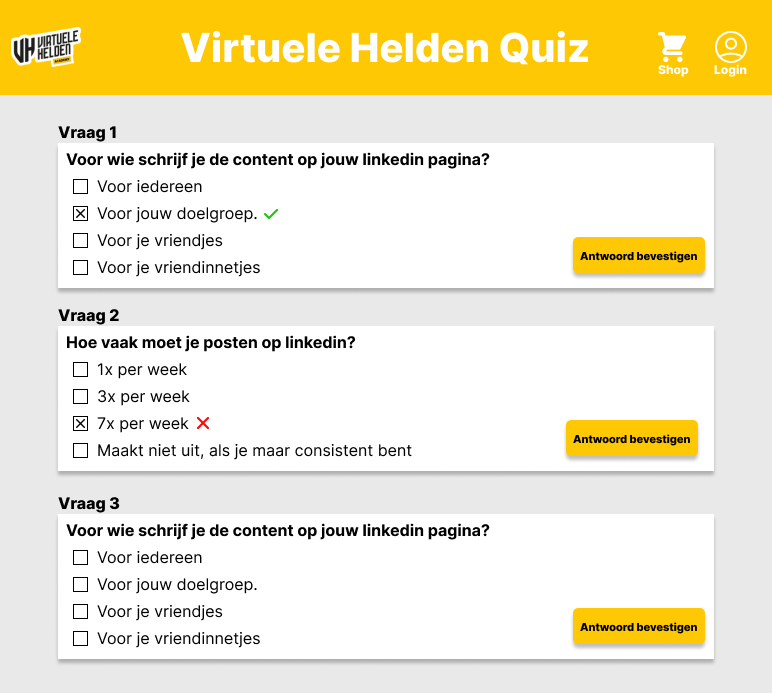

Concept 1: Quiz
Makkelijker kunnen we het niet maken, wel leuker! Daarom hebben wij deze Virtuele Helden quiz verzonnen om leden van de community te ondersteunen bij het vormen van hun brand. Per goed beantwoorde vraag zijn er punten te verdienen. Deze punten kun je vervolgens uitgeven in de shop om beloningen te kopen. De vragen zelf kunnen over verschillende onderwerpen gaan, dus bereid je goed voor! Uiteraard hoort bij dit concept ook een dashboard, waar de administrator vragen kan toevoegen, wijzigen en verwijderen.
Concept 2: Posts & stories

Wat is ervoor nodig om leden van een community betrokken te houden? Hier zijn meerdere antwoorden voor, maar zonder goede content kom je niet ver. Volgens ons is hier nog winst te halen voor Virtuele Helden. Daarom hebben wij meerdere invullingen verzonnen. Plaats bijvoorbeeld succes stories vanuit de community op je socials, of zet elke maand een lid in het zonnetje. Als community event kun je bijvoorbeeld wekelijks een LinkedIn-post gaan verbeteren op fouten. Er zijn nog meer ideeën te verzinnen, maar belangrijk hierbij is consistentie! Bij dit concept hoort ook een kalender, waarop de standaardcontent weergegeven wordt (zoals elke woensdag een verbeterpost) maar die ook voor persoonlijk gebruik geschikt is.
Concept 3: Leerdoelentraject

Iedereen die lid wordt van de community doet dat met een wens of een missie. Maar niet iedereen weet precies hoe daar te komen. Om deze reden hebben wij het leerdoelentraject verzonnen! Zowel nieuwe als bestaande leden kunnen een gesprek aanvragen met Roel om persoonlijke doelen op te stellen. Hier wordt een dashboard voor ontwikkeld. Ook kun je in dit dashboard feedback vragen op je doelen en bijhouden wat je al bereikt hebt. Met het oog op privacy kunnen de doelen zichtbaar zijn voor andere leden, maar ook verborgen worden. Tot slot hoort hier nog een kalender bij, zodat je datums kunt koppelen aan je doelen, en zullen er natuurlijks voortgangssgesprekken mogelijk zijn.
-
Jelmer Rosdorf
Hoi! Ik ben Jelmer en ik ben de projectleider voor dit project. Dat houdt in dat ik onder andere de presentaties verzorg en het contact met de opdrachtgever onderhoud. Ook hou ik het algemene verloop van het project in de gaten en trek ik misschien iets te vaak mijn mond open. Mijn interesse ligt bij front-end development en accessibility.
-

Timo Wieme
Hi, mijn naam is Timo. Ik ben de scrummaster voor ons project. Met deze rol zorg ik dat de planning goed up-to-date is en we niet achter komen te lopen. Ook verzorg ik voor elke meeting de stand-up! Ik ben verder vooral een Front-End developer en probeer wat meer te leren van de ontwerpfase!
-

Luc Karlas
Hoi, ik ben Luc, en ik ben de Tech Lead van ons project. Ik zorg ervoor dat al onze geprogrammeerde code netjes in het project terecht komt. Ik hou me verder vooral bezig met back-end programmeren, en in mijn vrije tijd game en sport ik graag.
-
Thomas de Haas
Hallo! Mijn naam is Thomas. Ik ben de designer van de groep. Het zal dus mijn taak zijn om het ontwerp van het eind product zo mooi en gebruikersvriendelijk te maken! Ik wil ervoor zorgen dat het product goed oogt voor de gebruiker maar dat ze ook een fijne ervaring zullen hebben met het gebruiken van het product.
Gekozen Concept
Na de 3 door ons bedachte concepten te hebben gepresenteerd, was voor Roel de keuze niet moeilijk. Concept 2: Posts & Stories is zijn favoriet!
Wij zijn gelijk door gegaan met het uitwerken van de visuele- en technische ontwerpen. Thomas en Jelmer waren hierbij verantwoordelijk voor de ontwerpen in Figma, Timo en Luc waren verantwoordelijk voor het technische ontwerp en het opzetten van het project.
Na de 3 door ons bedachte concepten te hebben gepresenteerd, was voor Roel de keuze niet moeilijk. Concept 2: Posts & Stories is zijn favoriet!
Wij zijn gelijk door gegaan met het uitwerken van de visuele- en technische ontwerpen. Thomas en Jelmer waren hierbij verantwoordelijk voor de ontwerpen in Figma, Timo en Luc waren verantwoordelijk voor het technische ontwerp en het opzetten van het project.
Aan de hand van de ontwerpen hebben we user stories opgesteld :
Must Have
Als gebruiker wil ik een kalender met geplande evenementen/posts, zodat ik kan zien wanneer bepaalde gebeurtenissen plaatsvinden.
Must Have
Als beheerder wil ik een template kunnen vullen met content, zodat ik efficiënt en consistent herkenbare posts kan plaatsen.
Must Have
Als gebruiker wil ik kunnen inloggen op de applicatie, zodat er onderscheid gemaakt kan worden tussen leden.
Must Have
Als gebruiker wil ik mijn eigen post-momenten kunnen toevoegen aan de kalender, zodat ik herinneringen ontvang dat ik een bericht moet plaatsen.
Must Have
Als gebruiker wil ik dat mijn account goed beveiligd is, zodat mijn informatie veilig wordt bewaard.
Should Have
Als gebruiker wil ik mijn gegevens kunnen aanpassen, zodat ik controle heb over mijn gegevens.
Should Have
Als beheerder wil ik items kunnen toevoegen aan de algemene kalender, zodat alle leden op de hoogte zijn van de laatste nieuwtjes en posts.
Should Have
Als gebruiker wil ik push-notificaties krijgen, zodat ik weet wanneer er een evenement plaatsvindt.
Should Have
Als gebruiker wil ik push-notificaties krijgen, zodat ik kan zien wanneer er berichten gepost worden.
Vervolg
Na het opstellen van de User Stories zijn we begonnen met het maken van het Technisch Prototype. We hebben we als eerst gekeken naar wie welke user stories ging uitvoeren. Door dit te doen konden we een planning maken van het ontwikkelproces om zo op tijd klaar te zijn met het prototype.
Vervolgens begon het ontwikkelen echt. Luc begon aan het maken van de back-end, Jelmer werkte aan de kalender, en Thomas en Timo werkte aan de front-end en het opstellen van de PWA. Tijdens het ontwikkelproces zijn we tegen een aantal dingen aangelopen. Zo wilde de back-end niet werken door een kleine fout, en hebben we bij het mergen van een deel van de front-end en de back-end heel veel problemen gekregen, waardoor de commit history iets minder netjes is dan bedoeld.
Verder is het opzetten van de PWA iets anders gelopen dan we hadden gepland. Het plan was om het via Workbox te doen, maar dit is uiteindelijk niet op die manier gedaan, omdat niemand goed overweg kon met Workbox.
Eindresultaten
- Een werkend loginsysteem met registreerpagina, loginpaginan en een loguitpagina.
- Een kalender waaraan gebruikers events kunnen toevoegen.
- Een PWA waarmee pushnotificaties gestuurd kunnen worden naar de gebruikers over bepaalde events, en waarmee de website offline en op mobile bekeken kan worden.
Het Technisch Prototype bevat uiteindelijk de volgende features:
Demo eindresultaat
Hieronder is een demo van ons opgeleverde product te vinden. In deze demo laten wij bovenstaande features zien.
Doorontwikkeling
- Het kunnen wijzigen en verwijderen van een event
- Inplannen van standaardcontent
- Meer variaties op de standaardcontent
- Koppeling met Huddle en dus de Virtuele Helden community
Vanwege de relatief korte doorlooptijd van dit project is het ons niet gelukt om alle user stories in het project te verwerken. Indien we verder zouden kunnen gaan met het ontwikkelen dan zouden we de volgende punten nog aanpakken:
Met name dit laatste punt zou interessant zijn, omdat we dan onze applicatie kunnen combineren met wat de opdrachtgever al heeft. Zo zou je dan in kunnen loggen met je Virtuele Helden account, de content zou ook echt geplaatst kunnen worden in de community, etc.